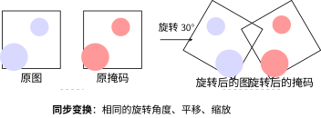

数据增强与训练技巧#
问题：数据不够怎么办？#
U-Net 发表时的关键成就之一：用 30 张训练图像在 ISBI 细胞分割挑战赛上达到 SOTA。深度学习的常识是"数据越多越好"，但医学图像标注极其昂贵——标注一张细胞分割图可能需要专家数十分钟。
U-Net 的答案：数据增强 + 网络设计的数据效率。
数据增强#
数据增强（Data Augmentation）通过对现有训练样本施加随机变换来生成"新"样本，是解决小数据问题的首要武器。
分割增强的特殊要求#
分类任务的增强只作用于图像。分割任务中，图像和掩码必须做完全相同的几何变换——如果图像旋转了 30°，掩码也必须旋转 30°，否则模型学到的对应关系是错误的。

图像与掩码同步变换
import albumentations as A
from albumentations.pytorch import ToTensorV2
def get_train_transforms():
"""训练阶段数据增强：图像和掩码同步变换"""
return A.Compose([
# 几何变换（图像+掩码同步）
A.RandomRotate90(p=0.5),
A.Flip(p=0.5),
A.ElasticTransform(
sigma=50, alpha=1, alpha_affine=50, p=0.3
),
# 强度变换（只应用于图像）
A.RandomBrightnessContrast(p=0.2),
A.GaussNoise(p=0.2),
# 标准化
A.Normalize(mean=[0.485], std=[0.229]),
ToTensorV2(),
], additional_targets={'mask': 'image'})
弹性变形：U-Net 的秘密武器#
弹性变形的直觉
想象一张果冻塑料膜，你用手指戳它——图像会局部扭曲，但整体内容不变。
弹性变形就是模拟这种效果：生成一个随机位移场，然后根据位移场插值图像。这对生物医学图像特别有用——细胞、组织本来就会有自然形变，弹性变形生成的"假样本"看起来仍然合理。
医学图像中细胞、组织的形态天然存在弹性形变（不同的患者、不同的切片角度）。弹性变形恰好模拟了这种变化——这让模型学到了 “细胞可以长成各种形状” ，而不是死记硬背训练集中的特定形态。
其他训练技巧#
学习率调度与搜索#
找到合适的学习率是训练 U-Net 的第一步。推荐使用学习率搜索：
# 学习率搜索：从 1e-6 到 1 指数增长，每个 batch 记录 loss
def lr_finder(model, train_loader, criterion, start_lr=1e-6, end_lr=1.0):
model.train()
optimizer = torch.optim.Adam(model.parameters(), lr=start_lr)
lrs, losses = [], []
lr = start_lr
for images, masks in train_loader:
optimizer.param_groups[0]['lr'] = lr
optimizer.zero_grad()
loss = criterion(model(images), masks)
loss.backward()
optimizer.step()
lrs.append(lr)
losses.append(loss.item())
lr *= (end_lr / start_lr) ** (1 / len(train_loader))
return lrs, losses
# 画出 lr vs loss 曲线，选 loss 下降最快的 lr
典型的学习率选择：U-Net + Adam [KB15] 组合，推荐 \(10^{-4}\) 到 \(3 \times 10^{-4}\)。
学习率调度#
# 选项1：验证损失不再下降时减半
scheduler = torch.optim.lr_scheduler.ReduceLROnPlateau(
optimizer, mode='min', factor=0.5, patience=10
)
# 选项2：余弦退火——学习率周期性变化
scheduler = torch.optim.lr_scheduler.CosineAnnealingLR(
optimizer, T_max=100, eta_min=1e-6
)
早停#
当验证集 Dice 系数连续 N 个 epoch 没有提升时停止训练，防止过拟合。
class EarlyStopping:
def __init__(self, patience=20, mode='max'):
self.patience = patience
self.mode = mode
self.counter = 0
self.best_score = None
self.early_stop = False
def __call__(self, score):
if self.best_score is None:
self.best_score = score
elif (self.mode == 'max' and score < self.best_score) or \
(self.mode == 'min' and score > self.best_score):
self.counter += 1
if self.counter >= self.patience:
self.early_stop = True
else:
self.best_score = score
self.counter = 0
return self.early_stop
混合精度训练#
from torch.cuda.amp import autocast, GradScaler
scaler = GradScaler()
for images, masks in train_loader:
optimizer.zero_grad()
with autocast():
outputs = model(images)
loss = criterion(outputs, masks)
scaler.scale(loss).backward()
scaler.step(optimizer)
scaler.update()
通过自动混合精度，训练速度可提升 2-3 倍，内存减少约 40%。
常见失败模式与诊断#
U-Net 训练中遇到问题时，可以用下面的系统排查法定位根因。
损失不下降#
症状 |
可能原因 |
如何验证 |
解决方案 |
|---|---|---|---|
损失卡在某个值不动 |
学习率太小 |
画出 lr finder 曲线 |
增大 lr 或使用查找得到的最优值 |
损失徘徊不变，Dice≈0 |
模型未收敛 |
检查梯度范数是否为 0 |
确认输入正常、权重已初始化 |
损失缓慢下降但非常慢 |
学习率太小 |
比较收敛速度与基准 |
尝试 lr×10 |
损失先降后停 |
陷入局部最优 |
用 SGD+momentum 试试 |
切换优化器或重启训练 |
损失震荡#
症状 |
可能原因 |
如何验证 |
解决方案 |
|---|---|---|---|
损失大幅波动 |
学习率太大 |
损失曲线呈锯齿状 |
减小 lr ×0.1 |
偶尔出现 loss spike |
批次中有异常样本 |
检查数据是否有 NaN |
梯度裁剪，检查数据预处理 |
Dice 在 0 和 0.9 之间反复 |
Dice 梯度不稳定 |
单独用 Dice 损失训练 |
使用 CE + Dice 组合损失 |
过拟合#
症状 |
可能原因 |
如何验证 |
解决方案 |
|---|---|---|---|
训练 Dice↑, 验证 Dice↓ |
模型记住了训练集 |
差距 > 0.05 即过拟合 |
增加数据增强，加 Dropout，早停 |
训练 Dice ≈ 1.0, 验证低 |
数据太少 + 增强不足 |
验证集多样本表现方差大 |
强化弹性变形，增加旋转/翻转 |
分割结果只预测背景 |
类别极度不平衡 |
检查验证集类别比例 |
使用加权损失或 Dice 损失 |
小目标分割失败#
症状 |
可能原因 |
如何验证 |
解决方案 |
|---|---|---|---|
小目标完全漏检 |
Dice 对小目标贡献太小 |
逐类计算 Dice，小类偏低 |
用焦点损失 + Dice |
小目标形状不对 |
下采样丢失了细节 |
检查感受野是否覆盖目标 |
减少下采样次数，或使用 dilation |
小目标位置偏移 |
空间精度不够 |
检查跳跃连接是否有效 |
尝试 Attention U-Net |
消融实验建议#
当你改进 U-Net 时，需要知道哪些改动真正有效。推荐做以下消融实验建立基准：
实验 |
比较对象 |
能回答的问题 |
|---|---|---|
U-Net vs 去掉跳跃连接 |
完整 U-Net vs 无 skip |
跳跃连接贡献了多少 Dice？ |
CE 损失 vs Dice 损失 vs CE+Dice |
三种损失函数 |
哪种损失最适合你的数据？ |
有/无弹性变形 |
两种增强策略 |
弹性变形带来了多少提升？ |
不同深度（3层 vs 4层 vs 5层） |
三种深度配置 |
多深是够？过深是否过拟合？ |
不同初始通道数(32/64/128) |
三种宽度配置 |
更宽是否更好？代价是什么？ |
每次只改一个变量，记录 Dice、IoU、参数量、训练时间。
实践检查清单#
问题 |
可能原因 |
解决方案 |
|---|---|---|
损失不下降 |
学习率太小 |
增大 lr 或使用学习率搜索 |
损失震荡 |
学习率太大 / Dice 梯度不稳定 |
减小 lr，使用 CE+Dice 组合损失 |
过拟合（验证集指标下降） |
数据太少 |
加强数据增强，早停 |
小目标分割差 |
Dice 对极小区域不敏感 |
用焦点损失，TTA |
训练慢 / 内存不够 |
模型太大 / 批次太大 |
混合精度，梯度累积 |
测试时增强（TTA）#
推理时对同一张图做多个版本的增强（旋转、翻转），取平均预测。免费提升 1-3% Dice：
def tta_predict(model, image):
predictions = []
for transform in tta_transforms:
aug_image = transform(image=image)['image']
with torch.no_grad():
pred = torch.sigmoid(model(aug_image.unsqueeze(0)))
predictions.append(pred.cpu())
return torch.stack(predictions).mean(dim=0)
小结#
U-Net 在小数据场景成功的关键公式：
下一节 总结与展望 我们看看 U-Net 的应用领域、有哪些变体，以及它的局限性在哪里。
参考文献#
Diederik P Kingma and Jimmy Ba. Adam: a method for stochastic optimization. In International Conference on Learning Representations. 2015.
贡献者与修订历史
查看详细修订记录
-
f159d562026-05-08 - Heyan Zhu: fix: address complaints from the linter -
b5e265a2026-04-28 - Heyan Zhu: docs(unet): restructure documentation and update content